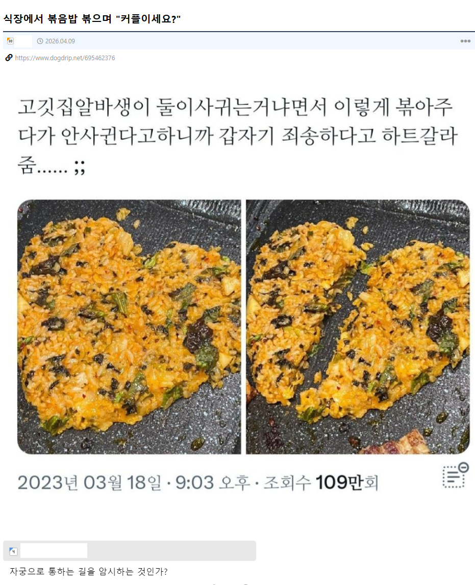

61 · 9 · 12 시간 전 · 원문

수집 당시 댓글 9개
↳ 답글 · 라던데 · 14 시간 전
↳ 답글 · Santa · 13 시간 전
미시사육 · 14 시간 전
뷰릇뷰릇
장래희망휴먼 · 13 시간 전
ㅎㅎㅎ 여기재밌다 형
에스페란사 · 13 시간 전
애니브리띵 · 13 시간 전
이건 제대로 된 암시다
↳ 답글 · 물개배박수 · 13 시간 전
물개배박수 · 13 시간 전
개듸리퍼 · 12 시간 전
10년전에 본거같은데
댓글
수집 당시 댓글 9개
· 라던데 · 14 시간 전
· Santa · 13 시간 전
미시사육 · 14 시간 전
뷰릇뷰릇
장래희망휴먼 · 13 시간 전
ㅎㅎㅎ 여기재밌다 형
에스페란사 · 13 시간 전
애니브리띵 · 13 시간 전
이건 제대로 된 암시다
· 물개배박수 · 13 시간 전
물개배박수 · 13 시간 전
개듸리퍼 · 12 시간 전
10년전에 본거같은데